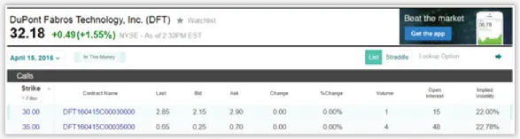
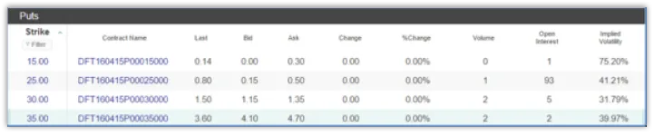
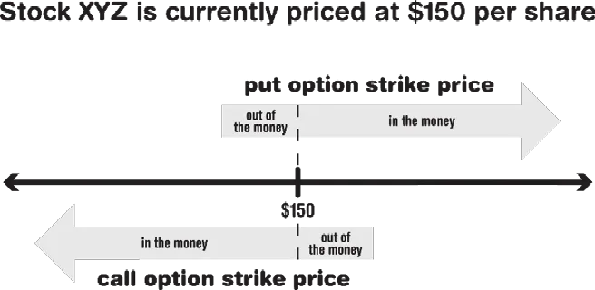

One of the fundamental challenges of teaching options trading to beginners is that there are many pitfalls, and if you just go into the market guns blazing, you will likely come up short. Many gurus and authors have thus turned their attentions to the search for good, simple, conservative trading strategies for beginner-level traders. Ideally, you will use these simple strategies to get a feel for options trading and to steadily learn more and more about the details, metrics, and more complex strategies that may come into play if you continue to trade.
Several authors and experts, among them Michael Sincere, author of Understanding Options, has argued that the selling of the covered call is one of the best ways to christen your options trading journey6 . Similar sentiment has been echoed by stocktrader.com in their published list of 6 Great Options Strategies for Beginners. The covered call is at the top of their list7 . It is the opinion of this author that the gurus aren’t promoting covered calls for beginners because they represent a somehow uniquely simple form of options trading, but instead, because they are a highly palatable way of introducing options into your general trading affairs.
Here’s why: as you may recall from Chapter 2, when you sell a call (any call), you’re guaranteeing another party the right to purchase a stock at an agreed-upon price –the strike price—before an agreed-upon period of time has expired. What makes the sale of the call “covered” is your ownership of the stock—known as the “underlying asset”—for which you are selling the call. In the example in Chapter 2, you sold a call option for Disney stock, and you did so because you owned Disney and selling your Disney Stock was already part of your larger strategy.
For options beginners, get your feet wet by choosing a stock that you already own (100 shares, preferably) and are looking to unload. Hence, a covered call can provide you an opportunity to make some money before you eventually sell off the stock. In the fictitious Disney example from Chapter 2, you sold a covered call option for 100 shares of Disney at a $120 strike price—short one DIS Nov 120 call—for $5 per share, a grand total of $500. Now, for the first-time options trader, the worst case scenario is that the price of Disney skyrockets and you miss out on a big return from the normal sale of the stock, as you’re forced to sell it off at $120 per share to the owner of the call. That said, you’re already going into the transaction with an intention to unload the Disney stock at a price that you, at least at the time, think is reasonable. Therefore, if you stick to covered calls for your first several option trades, you’ll be able to directly set limits for your losses, meanwhile, you’ll learn more about options trading and will be able to more comfortably integrate options into your overall investment strategy.
Ideally, selling covered calls on stocks you want to sell anyway will culminate in a cash influx. When you sell a covered call you will, of course, get paid for it. This payment is known as a “premium.” In the Disney example, the premium for selling the call option was $500. If the option is never exercised, then the seller pockets the premium, keeps the stock, and is free to put another covered call out onto the market and pocket another premium. This can be a great way to keep your stocks generating income for you, even as you’re preparing to part ways with them.
Let’s say you’re brand new to options and ready to sell your DuPont™ Stock (DFT). Meanwhile, you’d like to make some money on your way out of the stock and maybe try your hand at options trading. Let’s first take a look at the options chain:

As you can see, there’s a drop down menu just below the quoted price that allows you to select an expiration date for your call option. Since you’re accessing the options chain on December 16, 2015, go ahead and pull up available contracts with an expiration date of April 15, 2016, about four months away. Your objective is sell a call option contract (100 shares) for your DuPont shares. How do you use information found in the option chain to determine your sale price?
If you don’t already know what bid prices and ask prices are, then it’s definitely time to learn. These prices determine how much it’s going to cost to buy or sell your options. Since you’re selling, the bid price for a particular option represents what’s immediately available to you. Look at the chart in Fg. 8. Specifically take a look at the April 15th option contract with the $35 strike price. As you can see, there’s an ask price of $.70 and a bid price of $.25. This means that some party is prepared to immediately pay 25 cents per share to own this call option contract. There is also a party willing to sell this call option for $.70 per share. What does this tell you? Well, for starters, that’s a bit of a wide spread for such an inexpensive option—we’ll talk more about that later. But, long story short, if you want to guarantee your sale of the call option, then you can do so by accepting the bid price of $.25 and selling your covered call (100 shares worth) for a total of $25. Seems a little skimpy, huh? If you’re just starting in options trading, and especially if you’re looking at smaller spreads (the difference between the bid and the ask prices), then you may want to go ahead and sell your covered call at the bid price to ensure that you’re trade is filled. If you’re already familiar with exploiting the wiggle room between bids and ask prices, then you may want to jump right in with a limit order, in which you agree to purchase a certain financial asset (stocks, options, etc.) at or below a certain price. For example, you could instruct your broker to “sell one April DFT call at $.50 or better. 8” If you’ve been wondering, what the “one” means in option lingo, it refers to the buying or selling of “one” options contract (100 shares). If you sell two April DFT call at $.50 or better, then you’re selling two contracts (200 shares), and you’ll be paid $100 for the trade rather than $50, assuming your limit order is filled.
If you’re still having trouble getting your head around the concept of asks and bids, then imagine your brokerage as an import business, like Pier 1, that ships all of its products from South East Asia. There’s a particular cost to the business for each product because of the transportation expense and the cost of manufacturing the product. There’s also a particular retail price. The import business owner is not going to want to sell you one of her products at cost, because she won’t make any profit whatsoever. She’d prefer that you just pay retail price, but that doesn’t mean that she’d be unwilling to unload the product if you were interested in paying somewhere between the product cost and the retail price. Bottom line, flexibility is available, but there’s no guarantee that your negotiations will be fruitful.
Notice in your attempts to sell your covered call for DFT that you’re paying particular attention to the bottom most call contract, the one with the strike price of $35. You may also notice the little blue marker that Yahoo business uses to denote contracts that are currently In The Money (ITM). If an option is ITM, it means that exercising the option immediately will yield a profit. That is, of course, if you don’t take into account the cost of acquiring the option to begin with.
In Fg. 8 the topmost call contract is ITM and the bottom most, the one you’re looking at with the strike price of $35, is OTM. The $30 DFT call contract has a strike price ($30), which is less than the value of the stock. Therefore, if the owner of said option immediately called in the stock at $30, she’d be making a profit of $2.18 per share. That said, a price was paid to obtain the option. If that price was more than $2.18 per share, then there was actually no net profit made, even though the call option was ITM. Therefore, if an option is ITM, it’s going to increase in price, and if the option is OTM, then the option will lower in price. Now, it’s important to understand that the parameters of OTM and ITM change with the type of option being considered. Let’s take a look at the put options on the market for April 15th for DuPont. See Fg. 9 below.

Notice that the baby blue “ITM” highlight is used to denote the put option with the strike price of $35. This is because for put options, which represent a guaranteed right to “put” or sell stock back to the market, the strike price must be higher than the stock value in order for a profit to be realized. In Fg. 9, the put option that’s ITM has a strike price of $35 and bid-ask spread of $4.10-$4.70. The per share profit realized from immediately exercising this put option is $2.82 ($35-$32.18), which, of course, is offset by the price of purchasing the option. In order for any option (ITM or OTM) to be truly profitable for a buyer, the stock price (and/or the option price) must always move in the right direction within the allotted time. In other words, the direct profit obtained by calling in the stock or putting it on the market must be greater than the price you paid to obtain the option.

When you’re just starting out with options trading and selling a covered call, it’s better if you choose a contract with a strike price that’s slightly out of the money. Your thinking should be something akin to the following: ‘I’ve got 100 shares of DKT, currently valued at $32.18, that I’m looking to unload. I’d be happy to sell it off at $35 a share, so I’m going to let the stock work for me in the meantime—I’m going to sell a call option with a $35 strike price. I’ll make some money in the short term, and I’ll only have to sell my stock if it goes up to $35 or higher by the end of the expiration period. If the call option expires without ever being redeemed, then I’ll just issue a new one and continue to generate more money from the premiums received. I’ll keep track of how much money my stock has generated, as this is going to lower my cost basis for the stock, and ideally, make my overall involvement with DFT a more profitable and successful endeavor.’
Keep in mind that when we advocate selling the covered call option as a conservative play for a beginner, we’re doing so because the strategy is easy to understand and can be easily fit into a greater investment strategy. We’re not implying that this strategy is more likely than others to turn a profit or minimize risk. In his book, Options for the Beginner and Beyond, author and trader, Edward Olmstead, provides a reality check for the covered call trade strategy and issues the following caveats:
Everyone makes mistakes with their investments, whether you’re trading
stocks and options, buying gold and silver, or purchasing real estate. A
good pre-investing education, can help you avoid some of the common
pitfalls that claim beginning options investors and send them running for
the hills.
Consider these:
You should always enter options deals with a plan, most specifically an exit plan. Many of us make a definitive exit plan only to get caught up in the moment and change it. Choose your upside and downside exit points in advance and adhere to those decisions. Don’t wait around because you think a stock is going to soar through the roof and you’ll make even more. The converse is true as well. Don’t ditch your exit strategy in hopes that a stock will come up and you’ll recoup more of your losses. It’s easy to let your emotions get the best of you during trading, especially with your money at risk, but you need to put those emotions aside as best you can. That doesn’t mean, of course, that you can’t reassess your plan at all. You just don’t want to do it in the middle of a trade.
Do you know someone who heads to the supermarket with stacks of coupons, buying everything with these cents-off offers whether they need the items or not? Well, some traders operate that way, too. Brokers warn new options traders about the temptation to buy deeply out-of-the-money options just because they’re cheap. This is especially true of those working with limited funds. If an option is very far out-of-the-money, it has a long way to move before it becomes profitable. Hence, it’s often a better idea to start with options that cost more and are more in-the-money and have an expiration date that’s further out. Ultimately, the reward may not be as large, but the risk will certainly be lower.
You can’t avoid losses altogether when you’re dealing with options trading, so don’t fear losses. Losses happen, but you just need to learn how to keep them as small as possible. Inevitably you’ll suffer a few sizeable ones as well, but you can’t let that scare you away from the market. Don’t just think about your trades in the context of whether or not they make money for your portfolio, but think of whether they are in line with your own rules for trading. That in itself constitutes success. Then accept the fact that you can’t control the market.
Think about these things before you make any trade: 1) What is a reasonable amount of money for this trade? 2) What entry and exit signals do I need to identify? 3) What is the maximum risk I’m willing to assume for this trade? and 4) Why is it important for me to execute each order according to plan? (See Plan to Work and Work Your Plan.) These are all part of being a disciplined options trader. Discipline also occurs as a result of researching each trade before you take the plunge. In short, you must learn all the things you need to do to trade successfully. You’re reading this book, so you’re off to a good start!
As you learn the particulars of puts and calls, ITM, OTM, and everything else associated with the options trading world, you might want to create a virtual portfolio. Many beginning investors do this with stocks, and it tends to work well with options, too. Anything that makes you feel more comfortable before you put your money on the line is a good thing, and with virtual or “paper” trading, you are free to make mistakes and learn from them.
Paper trading allows you to ready yourself for the tasks involved in options trading. You’ll learn to analyze the options available and organize your record keeping, and you’ll observe how the market responds to certain factors and how you should respond. You’ll be forced to face certain situations that could be nail-biting if your money were truly on the line, but if you do it on paper and succeed, you’ll be more confident when it’s the real thing.
Some experts discourage paper trading because they believe it’s just too easy on the psyche. Options trading can be a true roller coaster ride, and by taking the ride on paper without a true risk, you cannot prepare yourself emotionally for the losses you might encounter as you trade. Others note that paper trading does not help with the understanding of trade execution.
All of that said, however, if you want to practice first, you can paper trade “on paper” or even do it electronically. The CBOE, for example, offers a free virtual trade tool on its website (www.cboe.org), which allows you to test a new strategy before putting it into action. Use their detailed virtual trade screens to get a feel for real options trading. They even offer live chat support when you need it. It’s a win-win situation for anyone who’s not quite ready to start trading with her investment funds
If you do this, it’s important to create realistic scenarios as you trade. If you’re not going to be investing $3 million, then don’t paper trade with $3 million! Only use amounts that you’re going to be able to afford when it’s time to do the real thing. Similarly, don’t make aggressive moves that you wouldn’t make if this were your actual money. The more you relate your paper trading strategies to YOUR reality, the better you’ll do after you exit the virtual world.
Several investment firms offer virtual trading sites, others do not. A few of the better paper trading sites are listed below. Each is a little different and some have limits as to what you can virtually invest. In most cases, you need to open an account (fill out a registration form) to use them.